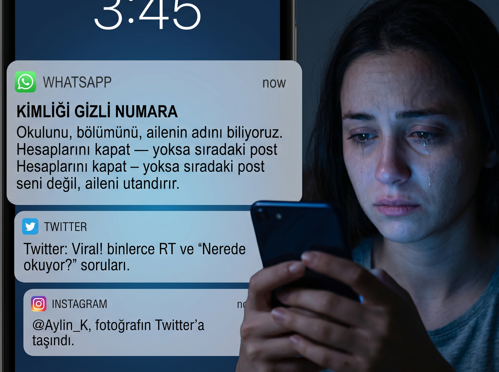
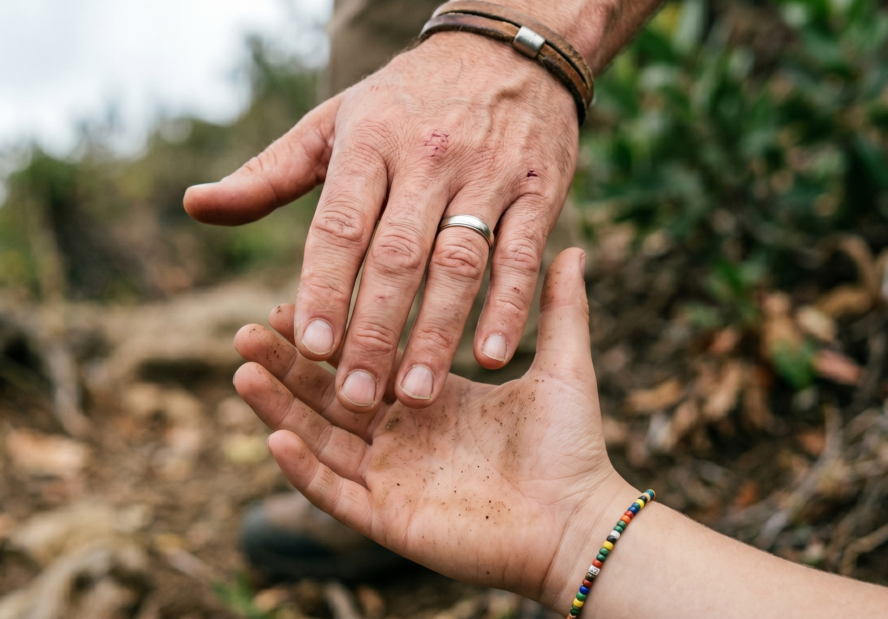

Dijital Karanlık
11. Hafta: Bilişim Suçları ve Siber Zorbalık
Bir Cuma Akşamı…
Aylin, Instagram'da arkadaşlarıyla kafe fotoğrafını paylaştı — profili açıktı. Gece tanımadığı bir hesap o fotoğrafı Twitter'a aşağılayıcı yorumlarla taşıdı; saatler içinde binlerce RT ve "nerede okuyor?" soruları. Sabaha doğru kimliği gizli bir numaradan WhatsApp'a mesaj düştü: "Okulunu, bölümünü, ailenin adını biliyoruz. Hesaplarını kapat — yoksa sıradaki post seni değil, aileni utandırır."
Rızasız yeniden yayınlama → TCK 134 + KVKK
Aşağılayıcı post + yorum linçi → TCK 125 hakaret
Okul / numara / aile avı → doxxing + KVKK ihlali
"Aileni utandırırım" mesajı → TCK 106 tehdit + 107 şantaj

images/whatsapp_case.png
tehdit mesajlarıyla dolu telefon
Türkiye: Dijital Tehditin Yüzü
USOM (Ulusal Siber Olaylara Müdahale Merkezi) 2023 yıl sonu raporu
Engellenen Saldırı
2023 yılı toplam
Fidye Yazılım Artışı
2022 → 2023
Genç Siber Zorbalık Mağduru
UNICEF Türkiye 2022
Her 2 saniyede bir Türkiye'ye bir siber saldırı girişimi olmaktadır.
Bilişim Suçu: Tanım
Bilgisayar veya ağ sistemlerinin araç ya da hedef olduğu, hukuken suç sayılan eylemlerdir.
🎯 Bilgisayar HEDEF
Sistemi çökertme, veri sızdırma, fidye yazılım
🛠 Bilgisayar ARAÇ
Dolandırıcılık, hakaret, sahtecilik
📎 Bilgisayar YARDIMCI
Delil saklama, planlama, iletişim
images/tck_justice.png
hukuk terazisi + dijital kod
Siber Suçun Dönüm Noktaları
Morris Worm
İlk internet solucanı — internetin %10'unu durdurdu
ILOVEYOU Virüsü
E-posta ile 45M bilgisayara bulaştı — 10 milyar $ zarar
WannaCry
150 ülke, 200K bilgisayar — NHS hastaneleri kilitlendi
Colonial Pipeline
ABD'nin en büyük boru hattı durdu — 4.4M $ fidye ödendi
AI-Destekli Saldırılar
Deepfake sesli dolandırıcılık, otomatik oltalama
Türk Ceza Kanunu: 243-244-245
Bilişim Sistemine Girme
Hukuka aykırı erişim + kalmaya devam etme.
1 yıl veya adli para cezası
Sistemi Engelleme / Bozma
Veriyi silme, değiştirme, erişimi kesme.
6 ay – 3 yıl hapis
Banka/Kredi Kartı Kötüye Kullanımı
Başkasının kartıyla işlem, sahte kart üretimi.
3 – 6 yıl hapis
"Merak ettim, şifresiz bir ağa bağlandım" demek TCK 243 kapsamındadır. Niyet aramaz.
Kişisel Veri ve İnternet Yayınları
KVKK
Rızasız kişisel veri paylaşımı → TCK 134-136 ve idari para cezası.
5651 Sayılı Kanun
İnternet ortamında yapılan yayınlar ve bunlara karşı hukuki koruma.
İnsan Faktörü: Oltalama
Oltalama (phishing), siber saldırıların %90'ından fazlasında başlangıç vektörüdür. En büyük güvenlik açığı insandır.
Phishing
Sahte e-posta ile şifre veya finansal bilgi talebi
Smishing
SMS üzerinden kargo/banka kılığı
Vishing
Telefon aracılığıyla güven kazanma
Spear Phishing
Kişiye özel, araştırılmış saldırı
images/phishing_hook.png
oltaya takılı e-posta + kart
Bir Phishing E-postası Anatomisi
> Gönderen: ziraat-guvenIik@zr-tr.net ⚠ 1
> Konu: ACİL — Hesabınız Kilitlenecek! ⚠ 2
————————————————
Sayın müşterimiz,
Hesabınızda şüpheli işlem tespit edildi. ⚠ 3
Doğrulamak için şu linke ⚠ 4 24 saat içinde tıklayın. ⚠ 5
————————————————
Saygılarımızla, Zraat Bankası A.Ş.
Sahte domain: "zr-tr.net" ≠ "ziraatbank.com.tr"
Acil ton: "ACİL", "kilitlenecek" — panik yaratma
Muğlak uyarı: Hangi işlem? Hangi tarih? Bilgi yok
Gizli link: Metin "banka" gibi görünür, URL başka
Zaman baskısı: "24 saat içinde" — akla gelmez
Türkiye Vakası: "Kargonuz Bekliyor…"
+90 5XX XXX XX XX
Kargonuz gümrük işlemi
nedeniyle bekliyor.
Adres güncelleme için:
ytkargom-tr.co
📊 2023'te USOM'a bildirilen en yaygın smishing türü.
🎯 Neden işe yarıyor?
Herkes bir kargo bekliyor. Bağlam evrensel.
💀 Ne oluyor?
Link → sahte MTS/Yurtiçi sitesi → kart bilgisi + SMS kodu → hesap boşaltılıyor.
✓ Ne yapmalı?
Linke asla tıklama. Kargonu resmî uygulamadan ya da firma numarasından doğrula.
Siber Zorbalık
Dijital araçlar kullanılarak tekrarlanan, kasıtlı ve güç dengesizliği içeren saldırgan davranışlardır.
Flaming
Tartışmada aşağılama, küfür
Dışlama
Grup dışı bırakma, engelleme
Kişilik Çalma
Başkası gibi davranıp zarar
Cyberstalking
Dijital takip ve korkutma
Outing
Özel bilgi/görsel ifşa
Taciz
Israrlı mesaj/arama/mention
Kaynak: Nancy Willard (2007), Cyberbullying and Cyberthreats
Neden İnternetteki Ben Gerçekteki Benden Farklı?
Online Disinhibition Effect
John Suler (2004), ekran arkasında insanların çok daha cesur veya çok daha acımasız davrandığını göstermiştir. Bunun 6 sebebi vardır.
🎭 Anonimlik
"Kimse beni tanımıyor"
👁 Görünmezlik
"Yüzünü göremiyorum"
⏱ Asenkronluk
"Sonuç anında değil"
🧠 Solipsistik
"Sanki gerçek değilmiş gibi"
⚖ Otorite Azalması
"Kimse durdurmuyor"
🎮 Oyun Zihni
"Bu sadece bir oyun"
images/disinhibition_mask.png
yarı gerçek / yarı avatar yüz
Bedel: Amanda Todd
15 yaşındaki Amanda Todd, internette karşılaştığı bir yabancı tarafından tehdit edildi ve ifşa edildi. Okul değiştirse de görseller yayıldı, taciz sürdü. 2012'de hayatına son verdi.
Ölmeden önce yüklediği sessiz video — her kartta yazdığı tek bir cümle — siber zorbalığın bedelinin dünyaca tartışılmasına neden oldu.
🧠 Araştırma Bulgusu
Siber zorbalık mağduru gençlerde intihar düşüncesi 2 kat, intihar girişimi 2.3 kat daha yüksektir (JAMA Pediatrics, 2014).
images/amanda_candle.png
karanlıkta yanan anma mumu
Senaryo: Ekran Görüntüsü
Sınıf WhatsApp grubunda bir arkadaşın, hocanın kişisel bir sohbetinin ekran görüntüsünü paylaştı. Çok komik ve tüm grup gülüyor. Ama o yazışma rızasız alınmış.
Sustur & Bildir
"Bu KVKK ihlali. Gruptan kaldırılmalı."
Susma, Gül
"Zaten ben paylaşmadım, sadece okudum."
🔵 Faydacı Bakış
Gruba eğlence sağlar ama hocaya ciddi zarar, güven ve itibar kaybı. Net fayda = negatif.
🟣 Kant / Deontolojik
"Benim yazışmam da rızasız paylaşılsa ne hissederdim?" — evrensel yasa testi çöker.
🟢 Erdem Etiği
Dürüst, saygılı ve iyi niyetli bir öğrenci bu görüntüyü paylaşmaz; susmak da destek olmaktır.
Hukuki sonuç: TCK 134 (özel hayatın gizliliği), 132 (haberleşmenin gizliliği), KVKK — tümü ihlal.
Seyirci Değil, Destekçi Ol
Siber zorbalık, izleyenler sessiz kaldıkça güç kazanır. Darley & Latané'nin "bystander effect" araştırması gösterir: kalabalık arttıkça sorumluluk duygusu dağılır.
5D Yöntemi (Hollaback!)
Her üniversite öğrencisinin bilmesi gereken 5 müdahale biçimi.

images/upstander_hand.png
yardıma uzanan insan eli
5D Müdahale Yöntemi
Direct
Doğrudan karşı çık: "Bu uygun değil."
Distract
Dikkati dağıt: konuyu değiştir, emoji ile böl.
Delegate
Yetkiliye haber ver: öğretmen, moderatör.
Document
Kanıt topla: ekran görüntüsü, zaman damgası.
Delay
Sonradan ulaş: mağdura özel mesaj at, yalnız hissetmesin.
Kaynak: Hollaback! — Bystander Intervention Training
Kurtarıcı Hatlar
USOM
Siber olay bildirimi
usom.gov.tr
EGM Siber Suçlar
Resmi şikayet
ihbar.egm.gov.tr
KVKK Kurumu
Veri ihlali
kvkk.gov.tr
Alo 183
Çocuk, kadın, aile
Aile ve Sosyal Hizmetler
Şikayet Öncesi Altın Kural
Ekran görüntüsü + URL + zaman damgası al. Dijital delil saklamadan şikayet süreci çok zayıflar.
Dijital Dayanıklılık Kiti
Güçlü + tek kullanımlık parola, şifre yöneticisi kullan
2 aşamalı doğrulama (2FA) hayatın her yerinde
Şüpheli link? Asla tıklama, önce domaini incele
Paylaştığın her şey kalıcıdır — "silindi" göreceliyken
Konum, aile, okul, TC kimlik gizli kalsın
Güvenlik güncellemelerini ertelemeyi bırak
Açık Wi-Fi'da banka, mail, iş yok — VPN tercih et
Bir saldırıya uğrarsan ekran görüntüsü ilk refleks
Tanıdığın biri zorbalığa uğrarsa tek kelime: "Yalnız değilsin."
Haftaya Bakış
Sıradaki Konu: Siber Güvenlik ve Savunma
BU HAFTA NE ÖĞRENDİK?
TCK
243-244-245
Oltalama
5 Kırmızı Bayrak
Zorbalık
Amanda Todd / Disinhibition
5D
Destekçi Yöntem
"Ekranın arkasındaki sessizlik, rıza değil ihmaldir."